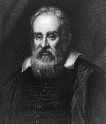

İtalya’da, Pisa yakınlarında doğan Galileo Galilei (1565-1642), modern fiziğin, modern astronominin ve modern bilimin babası olarak anılır. Başarılarının kısa bir listesinde bileşik mikrofonun icadı, Jüpiter’in etrafındaki uyduların keşfi, ilk sarkaçlı saat tasarımı ve uzayın derinliklerini görebilen bir teleskopun icadı da vardır. Bilimsel deneyleri, modern bilimsel yöntemler için bir altyapı oluşturmuş ve eylemsizlik kavramı, Isaac Newton’un hareket kanunlarına doğrudan ilham kaynağı olmuştur.

Fakat büyük ihtimalle Galileo’nun en büyük başarısı, Rönesans zamanında Roma Katolik Kilisesi’ne karşı aldığı tavırdı. O zamanlar, güneş sisteminin merkezinde güneşin bulunduğunu –Polonyalı astronom Nicolaus Copernicus’dan (1473-1543) kaynaklanan bir kuram– öğretmek, bir başkaldırma eylemi olarak değerlendiriliyordu. İncil’i harfi harfine takip eden kilise tarafından hoş görülen kuram ise güneş ve gezegenlerin Dünya’nın çevresinde döndüğünü söylüyordu. İki Kainat Sistemi Üzerine Konuşmalar başlıklı bilimsel incelemesinde Galileo, Copernicus’u savunmak için yeni teleskopuyla yaptığı gözlemleri kullandı. Engizisyon sırasında altmış dokuz yaşındaki Galileo’nun kitabı yasaklandı. Roma’da mahkeme önüne çıkarılan Galileo, kilise doktrinine karşı gelmekten suçlu bulundu ve ömür boyu hapse mahkûm edildi. Mahkûmiyeti ev hapsine çevrildi ve sekiz yıl sonra Floransa yakınlarındaki evinde Engizisyon gardiyanlarının gözetimi altında öldü.
1992’de, Galileo’nun duruşmasından 359 yıl sonra Papa II. John Paul, Galileo’nun cesaretini kabul eden ve cezalandırılmasından dolayı resmen özür dileyen bir komisyon kurdu.
EK BİLGİLER:
1. Galileo’nun babası, onun matematik okumasını değil, doktor olmasını istemişti.
2. Galileo, Ay yüzeyinde dağ ve vadiler gördüğünü kaydeden ilk kişiydi.
3. Galileo’nun her iki kızı da evlilik dışı doğmuş ve rahibe olmuştur.